5．黎曼几何的推广
黎曼几何在相对论中的成功运用使数学界恢复了对这门学科的兴趣。然而，爱因斯坦的工作提出了一个甚至更为广泛的问题。他用
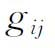
的适当函数使空间中的质量的引力效应具体化。结果，他的空-时中的测地线经证明恰恰就是物体自由运动的轨道，例如正像地球围绕太阳运转一样。与牛顿力学中的情况不同，为了解释运动的轨道不需要引力。重力的消失提出了另一个问题，那就是用空间的度量去解释电荷的吸力和斥力。这样一种成就将会给重力和电磁学提供一种统一的理论。这个工作已经导致黎曼几何的种种推广，这些推广总称为非黎曼几何。在黎曼几何中，
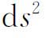
把空间中的点与点互相联系起来。它通过规定点与点之间的距离来指明空间中的点彼此是怎样联系的。在非黎曼几何中，点与点之间的联系不一定要用依赖于一个度量的方式来规定。这些几何的差异是很大的，并且每一种几何都有像黎曼几何本身那样广阔的发展。因此，我们将只给出这些几何中的基本概念的某些例子。这方面的工作主要是由外尔(12)开创的，他引进的那类几何通称为仿射联络空间的几何。在黎曼几何中，一个张量的协变导数本身是一个张量，其证明只依赖于形如
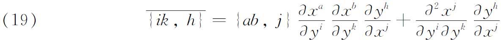
的关系，其中左边是在坐标从
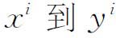
的变换下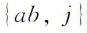
的变换式。这些关系被克里斯托费尔记号所满足，而这些记号本身是用基本形式的系数定义的。考虑用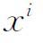
的函数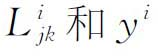
的函数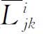
来代替这些记号，这些函数满足相同的关系（19），但是只规定作为给定的函数而同基本二次形式无关。与一个空间Vn相联系并具有变换性质（19）的一组函数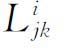
，说是构成一个仿射联络（affine connection）。这些函数称为这个仿射联络的系数，而空间Vn叫做仿射联络空间或仿射空间。黎曼几何是仿射联络空间几何的一种特例，在其中仿射联络的系数是第二类克里斯托费尔记号，并且是由空间的基本张量导出。给定了所有的L-函数，可以引进类似于黎曼几何中的一些概念，诸如协变微分、曲率和其他概念等。然而，在这种新的几何里，不能说向量的大小那样的话。在一个仿射联络空间中，一条曲线，如果它的所有切线关于这条曲线都是平行的（在该空间的平行位移的意义下），就称它为这空间的一条道路（path）。这样，道路乃是黎曼空间的测地线的一种推广。具有相同L-函数组的所有仿射联络空间有相同的道路。这样，仿射联络空间的几何便不需要黎曼度量。外尔从空间的性质导出了麦克斯韦方程组，但是这个理论整个说来并没有与其他已经确定的事实相一致。
另一种非黎曼几何称为道路几何，将归于艾森哈特（Luther P．Eisenhart，1876—1965）和维布伦(13)，处理办法稍有不同。它从n3个给定的函数
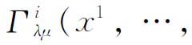
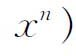
出发。n个微分方程的方程组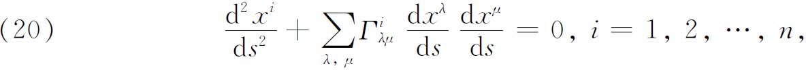
确定一族称为道路的曲线，方程中的
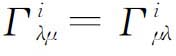
。这是几何的测地线。［在黎曼几何中，方程（20）正好是测地线的方程。］给定了刚才所述意义下的测地线，就能用完全类似于黎曼几何中的做法建立道路几何。黎曼几何的另一种不同的推广，是芬斯勒（Paul Finsler，1894—1970）1918年在格丁根他的一篇（未发表）论文中提出来的(14)。在这种几何中，黎曼度量
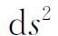
代之以坐标及其微分的更一般的函数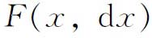
。对F要加一些限制以保证极小化积分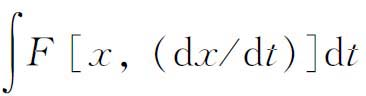
的可能性，从而得到测地线。推广黎曼几何的概念以便把电磁现象和引力现象结合起来的尝试，至今仍未成功。然而，数学家还是继续在抽象几何方面从事工作。
参考书目
Cartan，E．：“Les récentes généralisations de la notion d'espace，”Bull．des Sci．Math．，48，1924，294-320．
Pierpont，James：“Some Modern Views of Space，”Amer．Math．Soc．Bull．，32，1926，225-258．
Ricci-Curbastro，G．：Opere，2 vols．，Edizioni Cremonese，1956-1957．
Ricci-Curbastro，G．，和T．Levi-Civita：“Méthodes de calcul différentiel absolu et leurs applications，”Math．Ann．，54，1901，125-201．
Thomas，T．Y．：“Recent Trends in Geometry，”Amer．Math．Soc．Semicentennial PublicationsⅡ，1938，98-135．
Weatherburn，C．E．：The Development of Multidimensional Differential Geometry，Australian and New Zealand Association for the Advancement of Science，21，1933，12-28．
Weitzenbock，R．：“Neuere Arbeiten der algebraischen Invariantentheorie．Differentialinvarianten，”Encyk．der Math．Wiss．，B．G．Teubner，1902-1927，Ⅲ，PartⅢ，El，1-71．
Weyl，H．：Mathematische Analyse des Raumproblems（1923），Chelsea（reprint），1964．
————————————————————
(1) Bull．des Sci．Math．，（2），16，1892，167-189＝Opere，1，288-310．
(2) Math．Ann．，54，1901，125-201＝Ricci，Opere，2，185-271．
(3) Zeit．für Math．und Phys．，62，1914，225-261．
(4) Atti della Accad．dei Lincei，Rendiconti，（4），3，1887，15-18＝Opere，1，199-203．
(5) Jour．für Math．，70，1869，46-70和241-245，以及71-102。
(6) Atti della Accad．dei Lincei，Rendiconti，（4），5，1889，112-118＝Opere，1，268-275．
(7) Annalen der Phys．，17，1905，891-921；在爱因斯坦的Dover版“ThePrinciple of Relativity”（1951）中可以找到英译本。
(8) Annalen der Physik，49，1916，769-822．
(9) 这度量是
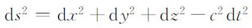
，这是一个常曲率空间。被平面t＝const．所截的任何截口是欧几里得的。(10) Rendiconti del Circolo Matematico di Palermo，42，1917，173-205．
(11) Math．Ann．，78，1918，187-217．
(12) Mathematische Zeitschrift，2，1918，384-411＝Ges．Abh．，2，1-28．
(13) Proceedings of the National Academy of Sciences，8，1922，19-23．
(14) Uber Kurven und Flachen in allgemeinen Raumen，Birkhauser Verlag，Basel，1951．